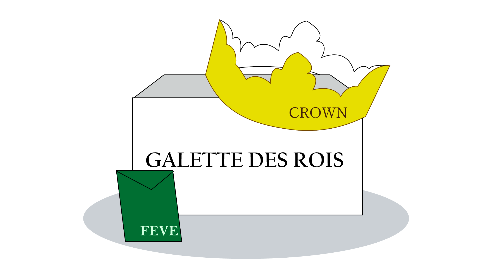
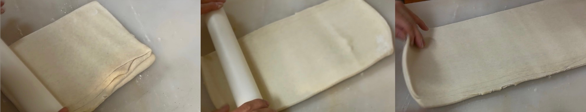

ガレット・デ・ロワ
ガレット・デ・ロワは、フランスの伝統的なお菓子で、1月6日の公現祭（エピファニー）に食べられます。現在では一月中に食べられる季節菓子として親しまれています。バターたっぷりのパイ生地に、アーモンドクリームが詰まったリッチな味わいが特徴です。中には「フェーヴ」と呼ばれる小さな陶器が隠されており、切り分けられたケーキの中からフェーヴを見つけた人は王冠をかぶり、その日一日王様または女王様として祝福されます。そしてその幸運は一年続くとも言われています。
JAMINでは安全を考慮し、フェーヴの代わりにアーモンドを一粒入れています。フランス製陶器フェーヴと王冠は、ガレット・デ・ロワに添えてお渡しします。
年に一度の特別なフランス伝統菓子を皆様もぜひお楽しみください。
こだわりの製法

当店のガレット・デ・ロワは、フランス伝統の製法で作っています。時代は進み、その難しさと手間から現在はフランスでもこの製法で作られることは少ないようです。
一週間かけ風味豊かなフランス産バターと生地をなじませます。伸ばしては折り込み一日寝かせる、これを繰り返し手作業で行います。時間をかけ仕込んだ本格的なパイ生地と特製のクレームダマンドの組み合わせは絶品です。
18㎝ 2600円(2808円)
21㎝ 2800円(3024円)
数に限りがございますのでご予約はお早めにお願いいたします。
お電話か店頭にて承っております。
TEL 022-218-7622